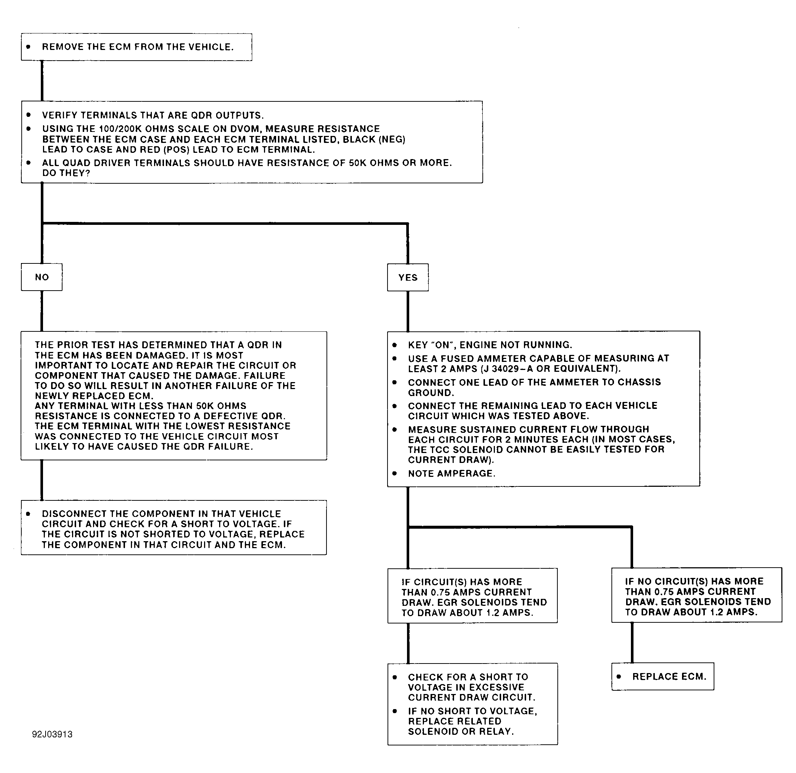

Home
>>
Subaru
>>
2019
>>
Crosstrek Limited
>>
Repair and Diagnosis (Single Page)
>>
General Information
>>
Engine Performance
>>
Parasitic Load Explanation & Test Procedures - General Information
>>
Testing For Parasitic Load
>>
Quad Driver Test
Quad Driver Test
Fig 1: Quad Driver Test

Courtesy of GENERAL MOTORS CORP.